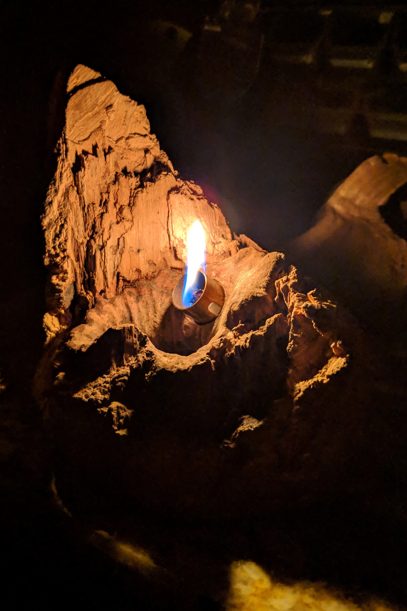
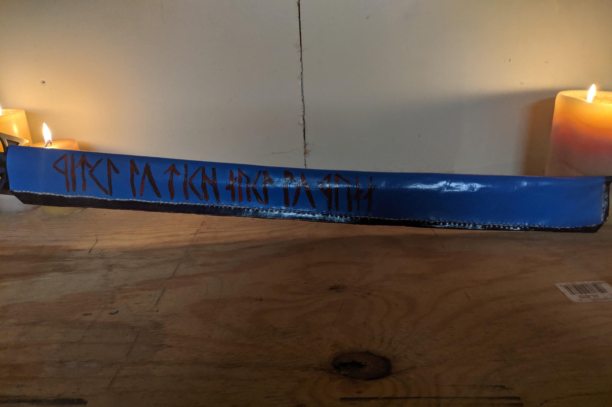
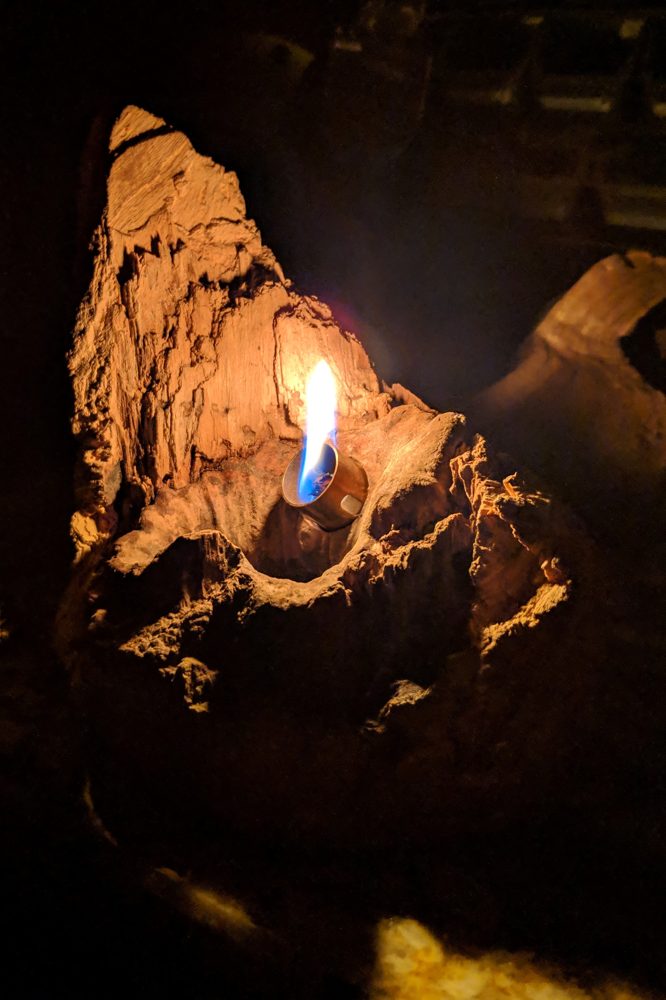
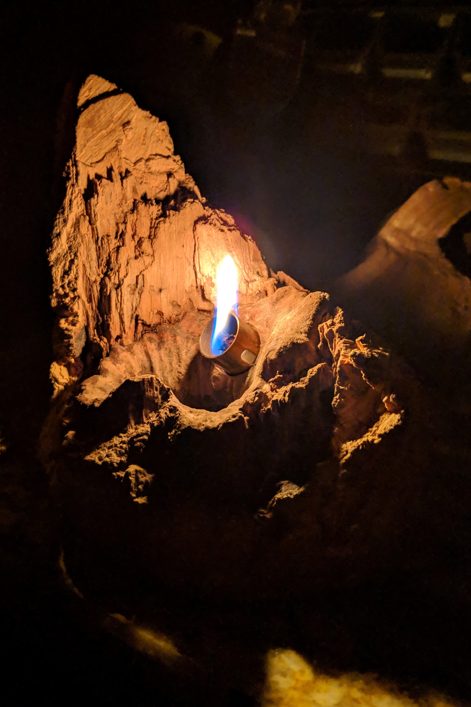
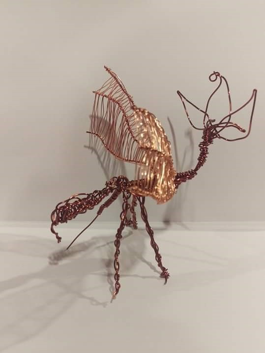
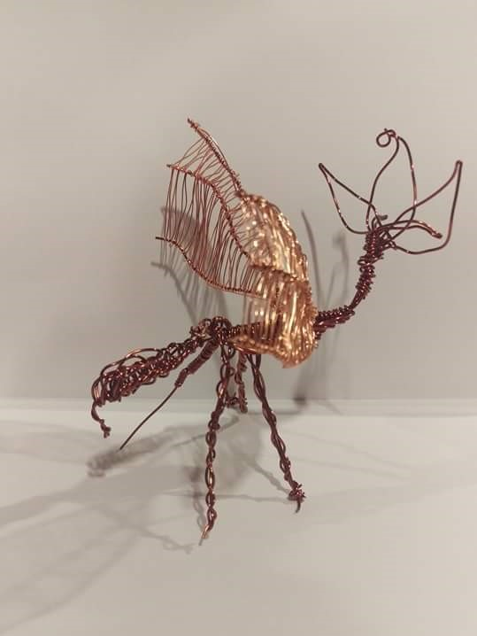

This is a non-exhaustive display of my other projects in other media.
This list with contain both 3D art, sculptures, and 2D drawings and concepts. Click on each of the headers to show the images for each project.
The majority of these contain in-progress photos as well as the finished product.
2019
I was commissioned to make a couple of cutting boards, with a bit of free license on the deisgn, so long as they were large (these are about 18" long and 8" tall). I was inspired by a youtuber to make a cutting board with a wavy/optical illusion pattern. The inspiration can be found here.
This is a knot of a tree that was saved from when a tree was cut down in my parent's backyard. I fitted a kerosene lamp wick and a small resovoir into the side of it, then stopped touching it. I think it looks like a fire against a mountainside.

My father expressed interest in a leather journal after I had made the first one (keep scrolling down to get to that), so I made him one. The strap that wraps around it is made from an old belt of his.
When I visited Europe several years ago, I bought my brother a sword. The sheath it came with was lack luster. So we fashioned one out of leather, then dyed it. The inscription reads "First to Rise, Last to Fall" in a Dwarvish script.

A simple scene of someone being adbucted by a U.F.O. Made from a combination of Walnut, Paduk, and Purpleheart woods, and a bit of copper wire.
My first attempt at making a book. I started with stitching the pages together, then bound it in cardboard for the covers, then wrapped the whole thing in a leather cover. I'm happy with how it turned out as a first attempt, but there will definitely be improvements in the next one.
A branding iron that my brother and I collaborated on for imprinting on projects we work together on. Made from a cut of round brass. Some example designs, then the final result are shown.
A lamp that my brother and I worked together on. It's a giant (about 2 feet in circumference) lump of cotton filler that is glued to a copper frame. Wrapped on the frame are string fairy lights.
I was comissioned to make 29 miniature menu signs/boards that are, I am told, traditionally German. They would often be displayed in delis or butcher shops to show the list of available items. These were made for a class of German language students, and eventually completed photos will be on display.
2018
A cutting board made of birch and walnut, finished with a linseed and beeswax oil.
A cutting board made of either oak or pine playwood, finished with a cherry stain. Design burned in, and leather to wrap the handle.
These are a set of a candle holders that my grandfather made. Apparently I broke them as a child, so I felt it right to fix them.
A friend of mine has a cat that she loves dearly. I made her this bas-relief style silhouette as a gift. It has a wire inlay of the cat's name at the bottom.
This is a modified NERF rifle that I painted to look similar to a gun from a game called Starbound. Purely cosmetic changes on this gun.
A walking stick made from the branch of an ash tree in my parent's back yard. It is designed with a stack of skulls on top.
A shield that was made for my brother to accompany the sword he owns.
2017
This is an axe based of the character description from a former D&D player of mine. It has the word "Medicinal" written in Draconic on the head. It is constructed of PVC, plywood, spray paints, and leather.
This is a letter opener based off a design for a D&D character's dagger. The writing is in Tolkien Elvish, and reads "Ancestral Redemption".
2016 and Older
The collection of glass pieces I have made. The cups were made with a cobalt powder, and the glass beads are just pure glass.
A collection of the leather pieces I have done.
Any uncategorized older works here. The chess board is the oldest piece I ever made and still have around. The dragon is made of copper wire.

 



 
